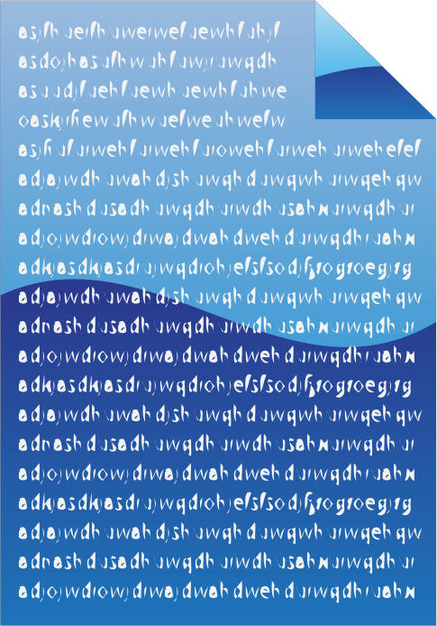
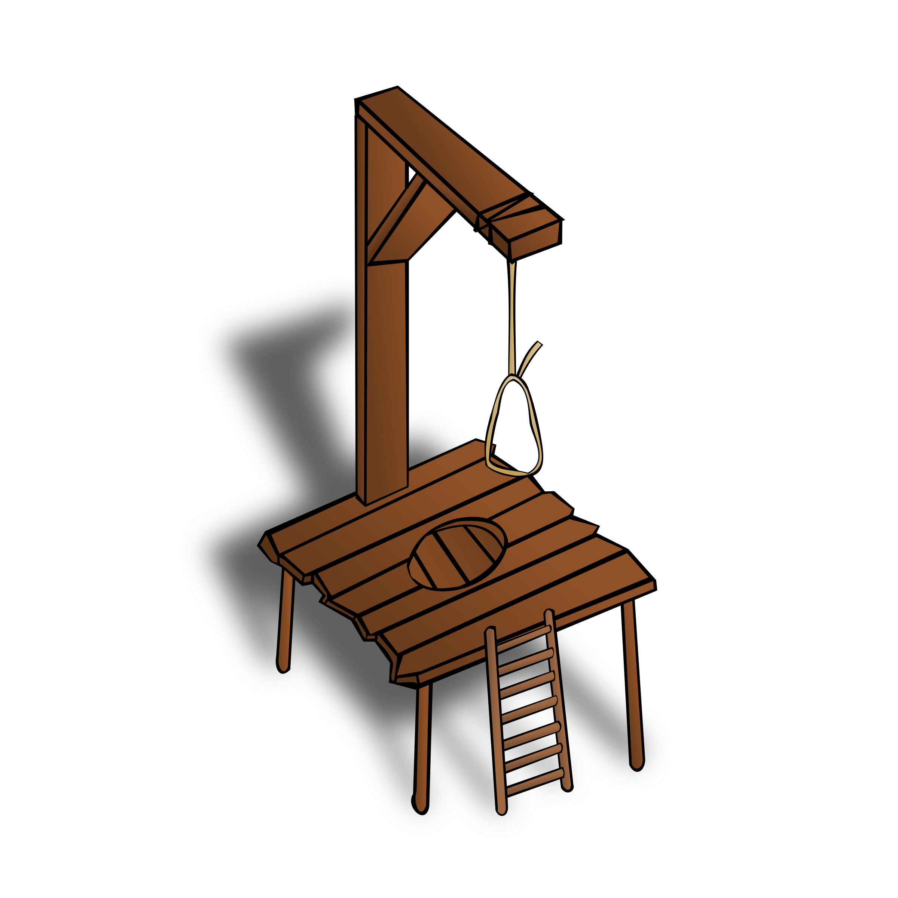
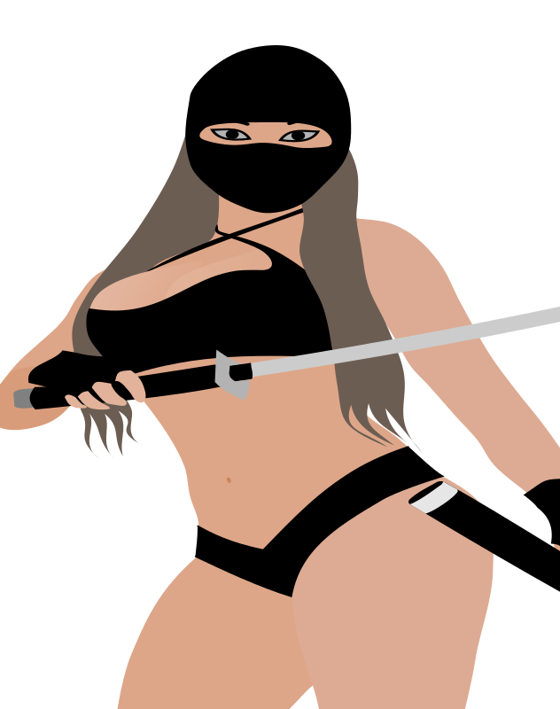

| 1 2 3 4 5 6 7 8 9 10 11 12 13 14 15 16 17 18 19 20 21 22 23 24 25 26 27 28 29 30 31 32 33 34 35 36 37 38 39 40 41 42 43 44 45 46 47 48 49 50 51 | ||
| 9:35 | TODO | |
| 9:35 | BACKUP | |
| 9:34 | MEDICAL | |
| 9:33 | STATUS | |
| 9:31 | C# | |
| 9:31 | C# | |
| 9:31 | FIXED | |
| 9:27 | BUG | "ERROR! Unknown content command tag 101at me, but my guess is that something went wrong during the compilation from old to new... Nothing I can do about that now, and it's not that important either! |
| 9:26 | FIXED | |
| 9:24 | FIXED | |
| 9:17 | STATUS | |
| 9:16 | BUG | |
| 9:14 | STATUS | |
| 9:13 | MAP | |
| 9:05 | SYSTEM | Well when ISP Z. illegally blocks my way to the internet an other ISP has to work it out for me and this has happened. However this costs time (which is normal. That Z. thinks they can whoop their wasses with the law is not their problem after all), and when everything goes according to planning my internet should work again at December 10th, this year! |
| - = 23 Nov 2018 = - | ||
| 17:12 | STATUS | |
| 17:10 | PHANTASAR | |
| 16:29 | FIXED | |
| 12:26 | PLAN | Speak for yourself if that is worth it :P |
| 12:24 | PLAN | |
| 12:23 | PLAN | When you play the casual mode it will very likely be floor #050, although #060 is possible. That leaves either floor #060 or #080 for the hard mode, depending on my future mood. |
| 12:21 | DONE | |
| 12:21 | DOCUMENTATION | Some legal documents properly set up |
| 12:01 | NOTE | |
| 12:01 | PHANTASAR | |
| 11:51 | ART | |
| 6:19 | MEDICAL | I hope I can at least send you an update of this Devlog A.S.A.P. |
| 0:42 | TODO | |
| 0:41 | PHANTASAR | |
| - = 22 Nov 2018 = - | ||
| 21:59 | COCKROACH | |
| 21:58 | FIXED | |
| 21:56 | FAILURE | |
| 21:54 | FAILURE | |
| 21:53 | STATUS | |
| 21:47 | FAILURE | |
| 21:43 | SYSTEM | Disk repair complete, let's hope git can work now |
| 21:06 | FAILURE | In fact it reports it multiple times.... Whatever that means.... :-/ |
| 21:03 | SYSTEM | Running a disk checkup |
| 21:00 | INVESTIGATION | |
| 20:58 | FAILURE |  Git is throwing nonsensical errors at me... Git is throwing nonsensical errors at me... |
| 20:44 | BUG | |
| 20:35 | TEST | |
| 20:31 | LINK | |
| 20:22 | LUA | |
| 20:18 | MAP |  Zone that should trigger the whine Zone that should trigger the whine |
| 20:14 | SCENARIO | |
| 20:08 | TODO | |
| 19:46 | NOTE | |
| 19:45 | SITE | |
| 19:44 | TECHNO | |
| 19:42 | REMOVED | |
| 19:41 | GITHUB | |
| 19:38 | PASCAL | |
| 9:01 | STATUS | |
| 9:01 | NOTE | |
| 9:00 | GITHUB | |
| 8:59 | STATUS | |
| 8:58 | SCENARIO | |
| 8:57 | MAP | Next weekend I hope to implement the next boss |
| 8:54 | NOTE | |
| 8:53 | SITE | |
| - = 21 Nov 2018 = - | ||
| 18:55:58 | SITE | The king is dead, long live the king! |
| 18:55:24 | CONFIRMED | |
| 18:54:38 | UNIX | |
| 18:51:22 | STATUS | |
| 18:47:43 | CONFIRMED | |
| 18:42:33 | FAILURE | I'll need to sort out later how to deal with that one! |
| 15:20:17 | C# | |
| 10:38:41 | LINK | |
| 10:38:23 | DONE | |
| 10:12:33 | C# | |
| - = 20 Nov 2018 = - | ||
| 23:27:10 | BACKUP | |
| 23:26:50 | STATUS | |
| 23:21:13 | STATUS | |
| 23:18:59 | TECHNO | |
| 23:16:03 | STATUS | |
| 23:15:28 | STATUS | |
| 23:14:17 | STATUS | |
| 23:12:42 | CONFIRMED | |
| 23:11:48 | TEST | |
| 23:10:13 | C# | |
| 23:09:07 | NOTE | |
| 23:08:48 | FIXED | |
| 23:06:47 | FIXED | |
| 23:04:24 | TEST | |
| 22:55:50 | LINK | |
| 22:54:37 | C# | |
| 22:54:19 | C# | |
| 22:48:17 | UNIX | |
| 22:46:25 | C# | |
| 22:44:20 | C# | |
| 22:43:24 | C# | |
| 22:43:07 | C# | |
| 22:38:23 | C# | |
| 22:36:26 | C# | |
| 22:35:20 | C# | |
| 22:34:28 | COSMETIC | |
| 22:33:19 | STATUS | |
| 21:59:45 | BACKUP | |
| 21:59:17 | UNIX | |
| 21:57:12 | C# | |
| 21:55:31 | TODO | |
| 21:55:12 | TODO |  I do need to put this into the prefix tab, but that comes later... I do need to put this into the prefix tab, but that comes later... |
| 21:54:25 | FIXED | |
| 21:51:42 | SOLVED | |
| 21:49:43 | DEBUG | |
| 21:49:29 | BUG | |
| 21:47:50 | DEBUG | |
| 21:44:43 | BUG | |
| 21:42:40 | FIXED | |
| 21:41:44 | STUPIDITY | Ah...... So THAT is the reason..... Moron! |
| 21:40:49 | BUG | |
| 21:40:09 | NOTE | |
| 21:38:33 | C# | |
| 21:37:13 | C# | |
| 21:35:49 | C# | |
| 21:27:56 | C# | This is just crash prevention.... Nothing more! |
| 21:23:14 | TECHNO | |
| 21:22:55 | C# | |
| 21:19:43 | OFFTOPIC | |
| 21:19:11 | FAILURE | |
| 21:19:02 | C# | |
| 21:16:37 | C# | |
| 21:15:20 | CONFIRMED | |
| 21:14:15 | C# | |
| 21:12:09 | C# | |
| 21:07:25 | GITHUB | |
| 21:03:02 | NOTE | |
| 21:02:47 | C# | |
| 20:52:31 | TODO | |
| 20:50:40 | SITE | |
| 20:50:02 | C# | |
| 20:45:37 | STATUS | |
| 20:32:07 | ANNOUNCEMENT | ZIGGO INTERNET NEVER NO MORE! NOOIT MEER! JAMAIS!!!! |
| 20:19:38 | CONFIRMED | |
| 20:11:52 | FIXED | |
| 20:06:22 | JUDGMENT | |
| 19:56:17 | TEST | |
| 19:56:02 | NERF | Troll's HP halved.... This simply took too long! |
| 19:53:48 | DEBUG | |
| 19:50:48 | FIXED | |
| 19:39:37 | TEST | |
| 19:39:23 | NOTE | |
| 19:39:02 | FIXED | |
| 19:35:27 | FIXED | |
| 19:30:14 | HUH | Why doesn't it load an ability when it clearly does exist? |
| 19:24:11 | TEST | |
| 19:24:05 | STATUS | |
| 19:23:22 | LINK | |
| 19:22:44 | MAP | |
| 19:15:37 | NOTE | |
| 19:15:03 | AI | Scripted out the Troll AI |
| 19:10:01 | ABILITY | |
| 19:05:47 | BOSS | Troll |
| 19:02:46 | FIXED | |
| 18:59:04 | RYANNA | Project file updated |
| 18:58:14 | ART | |
| 18:53:00 | PASCAL | |
| 16:59:01 | TEST | |
| 16:58:22 | SOLVED | |
| 16:56:47 | DUMP |
|
| 16:55:57 | INVESTIGATION | |
| 16:54:17 | BUG | |
| 16:49:22 | FAILURE | |
| 16:48:24 | GITHUB | |
| 16:46:23 | TEST | |
| 16:46:10 | MAP | |
| 16:45:55 | LINK | |
| 16:45:46 | SCRIPT | |
| 16:37:54 | SCENARIO | |
| 16:33:37 | LUA | |
| 16:32:24 | PASCAL | |
| 16:27:00 | MAP | |
| 16:23:06 | COSMETIC | |
| 16:21:51 | ART | |
| 16:14:53 | DONE | |
| 15:32:58 | FIXED | |
| 15:32:29 | NERF | I made some warding gates not throw you back as far as they should... Of course, this nerf does NOT affect the hard mode (HA HA!) |
| 13:54:43 | DONE | |
| 12:47:05 | TODO | |
| 12:38:27 | BACKUP | |
| 12:31:42 | STATUS | |
| 12:31:04 | SYSTEM | After seeing that a completely different game also lagged, I could only conclude my mac was to blame and thus I reset the system and now everything is fast again.... Spooky! |
| 10:33:12 | SYSTEM | I'm gonna reboot the system, and let's see if that solves anything at all |
| 10:32:32 | FAILURE | |
| - = 19 Nov 2018 = - | ||
| 21:50:23 | STATUS | |
| 21:40:53 | CONFIRMED | |
| 21:38:31 | TEST | |
| 21:38:08 | ALPHA | These fixes are too important not to update the alpha for, however thanks to an incompetent ISP that is now impossible... (THANKS) |
| 21:37:37 | FIXED | |
| 21:37:20 | COCKROACH | |
| 21:33:59 | TECHNO | |
| 21:33:33 | DONE | |
| 21:30:37 | TECHNO | |
| 21:29:23 | TECHNO | |
| 21:28:34 | FIXED | |
| 21:25:55 | TECHNO | |
| 21:25:11 | NOTAFIXBUTATLEASTNOCRASHSESNOW | Ah, another part of this routine as also acting up... Hopefully this will silence that issue! |
| 21:23:05 | NOTE | |
| 21:19:32 | NOTAFIXBUTATLEASTNOCRASHSESNOW | I've just set to ignore the alternate font routine for now.... It's the best for everybody, and I don't intend to work with alternate fonts anyway. |
| 1 2 3 4 5 6 7 8 9 10 11 12 13 14 15 16 17 18 19 20 21 22 23 24 25 26 27 28 29 30 31 32 33 34 35 36 37 38 39 40 41 42 43 44 45 46 47 48 49 50 51 | ||